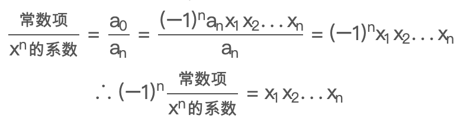

线性代数笔记(二十一)——特征方程
本节讨论了线性代数中非常重要的两个概念：特征值与特征向量。
特征方程
对于\(Ax=b\)我们往往做这样的解读：矩阵\(A\)乘以向量\(x\)，实际上是让\(A\)作用到向量\(x\)上，得到新的向量\(b\)。这里的\(A\)像是一个函数，\(x\)作为输入，\(b\)作为输出。在诸多\(Ax\)当中，我们尤其对这样的一类特殊群体感兴趣： \[ Ax=\lambda x \]
对非零向量\(x\)来说，上式意味着\(A\)发生作用之后，\(x\)和\(Ax\)依然保持同一方向。此时，我们把满足这个条件的非零向量\(x\)称为\(A\)的特征向量，\(\lambda\)称为\(A\)的特征值。而上式则被称为特征方程。
特征值\(\lambda=0\)
对特征方程来说，这里有个比较特殊的case：当\(\lambda\)为\(0\)时，易得\(Ax=0\)，即特征值为0的特征向量\(x\)位于\(A\)的零空间中。显然，对于奇异矩阵来说，必然存在非零向量满足\(Ax=0\)，这也就意味着：若矩阵\(A\)是奇异矩阵，那么它必有一个\(\lambda=0\)的特征值。
投影矩阵
若矩阵\(A\)是一个投影矩阵（\(P=A(A^TA)^{-1}A^T\)），那么它的特征值有哪些呢？
我们取比较特殊的向量：
- 对于向量\(b\)在\(P\)上做投影，当且仅当\(b\)本身已经处于投影空间中时（也就是\(P\)的列空间），\(Pb\)才和\(b\)方向相同。因此，投影空间中的所有向量都是投影矩阵的特征向量，它们的特征值都是\(1\)。
- 对于垂直于投影空间的法向量\(e\)，有\(Pe=0\)，因此投影空间的所有法向量（即\(P\)的左零空间）都是投影矩阵的特征向量，它们的特征值都是\(0\)。
二阶置换矩阵
二阶置换矩阵\(A=\begin{bmatrix}0&1\\ 1&0\end{bmatrix}\)，它的作用是交换二维向量\(x\)的两个元素。根据特征值和特征向量的定义，使用瞪眼法可以看出：
- \(A\)有特征值为\(1\)的特征向量，\(x_1=\begin{bmatrix}1\\ 1\end{bmatrix}\)。
- \(A\)有特征值为\(-1\)的特征向量，\(x_2=\begin{bmatrix}-1\\ 1\end{bmatrix}\)
特征方程求解
通用的求解方法可以对特征方程进行转化：\((A-\lambda I)x=0\)，若\(x\)有非零解，则意味着\(A-\lambda I\)是奇异矩阵，故\(\det(A-\lambda I)=0\)。
根据行列式展开生成的代数余子式，我们知道它是个\(\lambda\)的\(n\)次方程，因此\(n\)阶矩阵应有\(n\)个特征值，它们之中可能有相同的值，其中可能有实数，也可能有虚数。
示例
比如有矩阵\(A=\begin{bmatrix}3&1 \\ 1&3\end{bmatrix}\)，求特征值和特征向量。
解：
构造矩阵\(\begin{bmatrix}3-\lambda &1 \\ 1&3-\lambda \end{bmatrix}\)，其行列式带入化简得：\(\lambda ^2-6\lambda +8=0\)。
求得两个特征值\(\lambda_1=4, \lambda_2=2\)。带入求解特征向量分别为：\(x_1=\begin{bmatrix}1\\ 1\end{bmatrix}\)，\(x_2=\begin{bmatrix}-1\\ 1\end{bmatrix}\)。
另一方面，我们也发现该矩阵和二阶置换矩阵相比，两个特征向量完全相同，只是特征值发生了偏移（全部增加了3个单位）。事实上，这其中有着这样的规律，考虑：\(A=\begin{bmatrix}0&1\\1&0\end{bmatrix}+3I\)，原方程变为：\((A+3I)x=\lambda x+3x=(\lambda+3)x\)，这里可以看出\(x\)前后是没有变化的，即特征向量不变，但新的特征值变为了\(\lambda+3\)。
但是这一推理对于加一般矩阵\(B\)来说是不成立的，这是因为你无法保证\(A\)和\(B\)有同样的特征向量\(x\)，我们无法得出\((A+B)x=(\lambda+\alpha)x\)的结论，这是因为本质上\(x\)有差异(应该写作\(Ax=\lambda x, By=\alpha y\))。
特征值的性质
上面的例子其实也能看出，特征值的和与积有着一些明显特性：
- 矩阵的特征值之和等于矩阵的迹。
- 矩阵的特征值之积等于矩阵的行列式。
这两个性质的证明比较繁琐，但其本质就是韦达定理，这里限于篇幅不做展开论证。

旋转矩阵
对于旋转矩阵\(Q=\begin{bmatrix}\cos90^\circ&-sin90^\circ\\ sin90^\circ&cos90^\circ\end{bmatrix}=\begin{bmatrix}0&-1\\ 1&0\end{bmatrix}\)，作用到\(x\)可以让向量旋转\(90^\circ\)，利用特征值的性质，我们得到方程： \[ \begin{cases} \lambda_1+\lambda_2=0 \\ \lambda_1\cdot\lambda_2=1 \end{cases} \]
得到特征值\(\lambda_1=i,\lambda_2=-i\)。尽管矩阵全部都是实数，但得到的两个特征值却是虚数。
实际上，矩阵如果是对称的，那么特征值一定都是实数。越接近对称，特征值就越可能是实数，相反，越不对称，比如像上例中的反对称矩阵(\(A^T=-A\))，其特征值往往是虚数。实数特征值让特征向量伸缩，而虚数则让其旋转。
上三角阵
上三角阵的情况更糟糕，有\(A=\begin{bmatrix}3&1 \\ 0&3\end{bmatrix}\)，求特征值和特征向量。
带入\(\det(A-\lambda I)=0\)，得到\(\lambda_1=\lambda_2=3\)，此时两个特征值相等。将特征值带入求\(A-3I\)的零空间，零空间是一维的，这意味着他们有着相同的特征向量：\(x=\begin{bmatrix}1\\ 0\end{bmatrix}\)。我们无法再找出更多的线性无关的特征向量。
对于这种二阶退化矩阵，我们只能找到一个方向上的特征向量而非两个。推广到高阶，对特化矩阵而言，重复的特征值会导致特征向量的缺失。
如果特征值不同，那么一定有线性无关的特征向量；但如果特征值相同，却并不能说明一定不存在线性无关的多个特征向量。例如对于\(10\times 10\)的单位矩阵，它只有10个为\(1\)的特征值，但却可以轻易取得10个线性无关的特征向量，因为任意向量都是特征值为\(1\)的特征向量。